記「興富發棒球體驗營」的盛夏時光
每逢盛夏臨近，家長社群間總會泛起一陣心照不宣的躁動。眾人屏息等待的，並非流行巨星的演唱會門票，而是由台北市體育局主辦、素有「秒殺傳奇」之稱的「興富發棒球體驗營」。
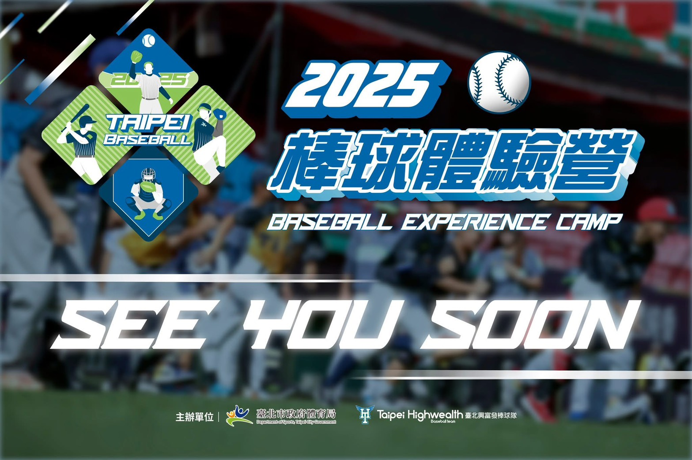 |
在電腦螢幕前看著倒數計時，心跳隨著秒針的逼近而劇烈激盪，當報名成功的視窗躍出螢幕時，那份如釋重負的欣喜，宛如贏了世界大賽的關鍵一局！這項由官方主辦、全程完全免費且配置頂級的親子活動，早已是無數家庭心中夢寐以求的夏日傳統。每年，我都帶著家中兩位正值國小階段且對棒球抱持無限憧憬的姊妹倆，幸福地踏上這座令無數球迷熱血沸騰的運動聖殿—天母棒球場。
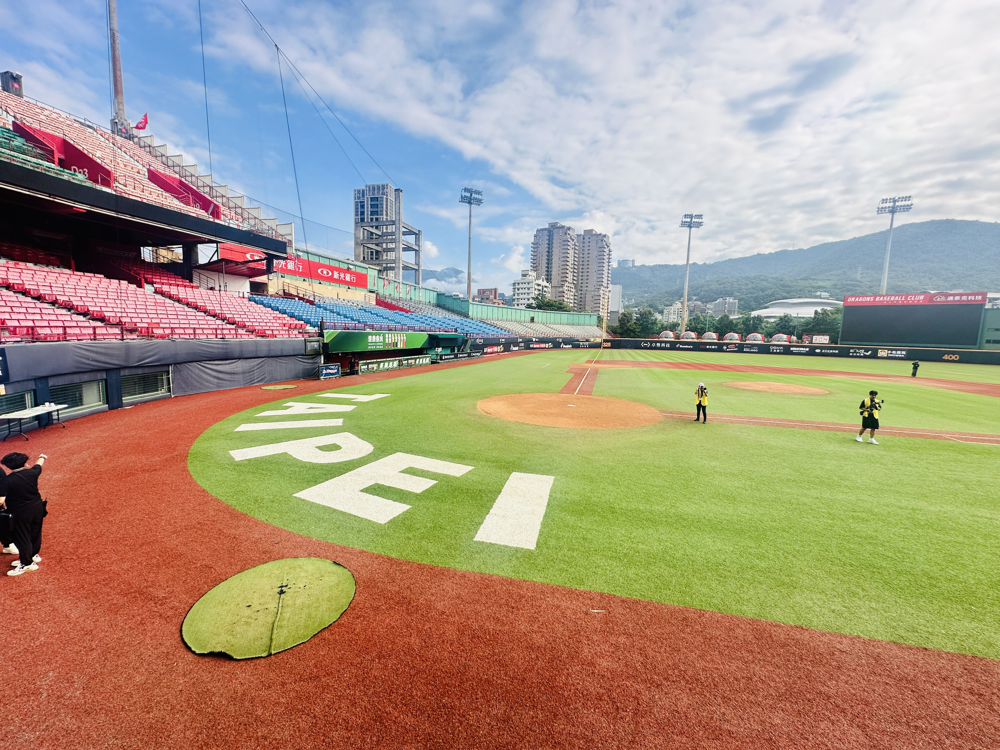 |
步入天母棒球場，踩踏在平整的草皮與柔軟的紅土上，孩子們的雙眸瞬間點燃了光芒。這座球場不僅是台北市的棒球地標，更是中華職棒熱血勁旅「味全龍」的專屬主場。平日裡只能透過電視轉播或遠在觀眾席上眺望的璀璨球場，如今在腳下真實地延展。湛藍的蒼穹下，巍峨的看台與巨大的計分板環繞四周，別說是年幼的孩子，連身為家長的我，亦不由得泛起一陣難言的悸動，心中沉睡已久的棒球魂在剎那間被喚醒。
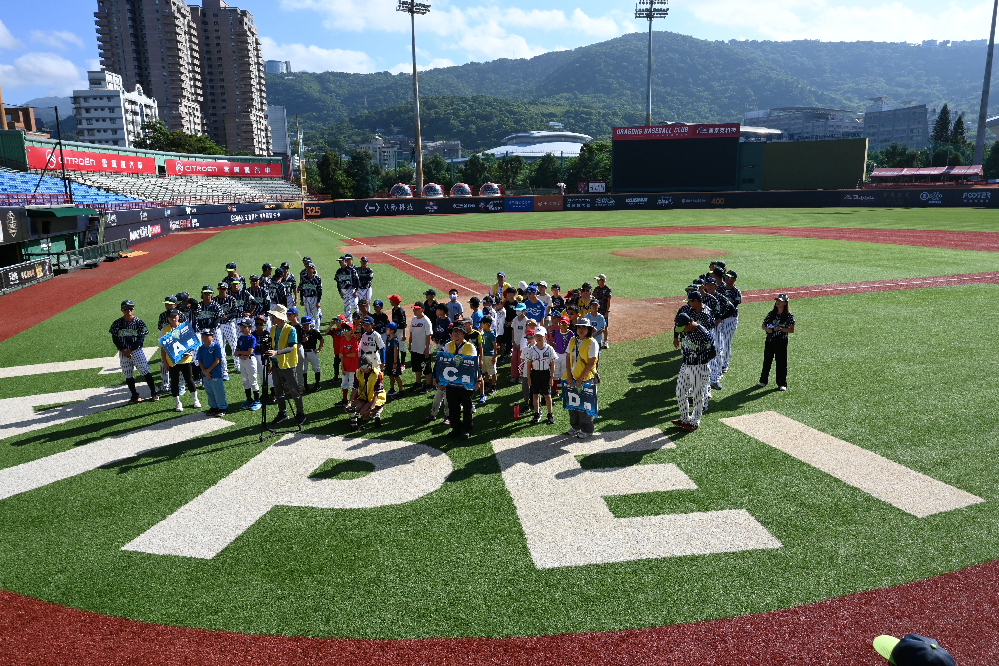 |
更令全場大小球迷雀躍的是，本次活動特別規劃了深度探索職棒基地的難得機會。在導覽帶領下，我們得以一窺平日戒備森嚴的球員休息室。
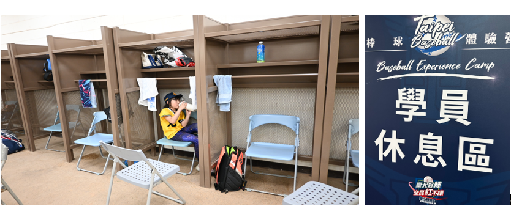 |
孩子們興奮地坐在職業選手準備出擊的板凳上，撫摸著一旁整齊排列的球具架，彷彿能嗅到賽事緊繃的張力與英雄們的精神。
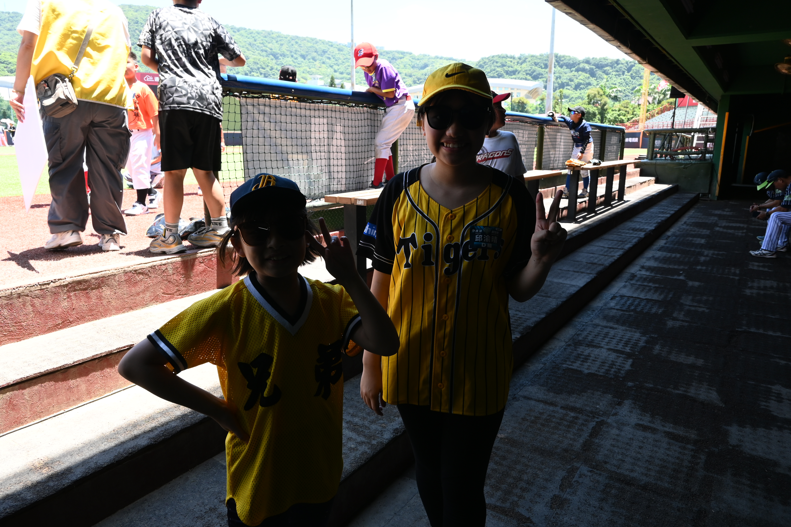 |
隨後，眾人更獲邀踏上平日充滿熱情渲染力的啦啦隊應援舞台。站在這個帶動萬人齊聲吶喊的制高點，迎面而來的是毫無遮蔽、縱覽全場的寬闊應援視野。
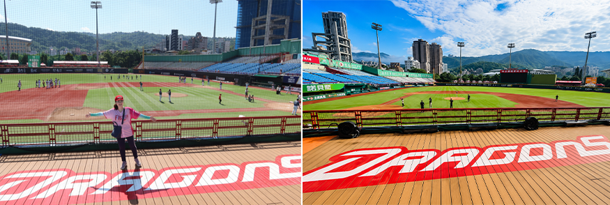 |
孩子們雙手攀在欄杆上，俯瞰著整片延伸的綠茵草地，想像著看台上排山倒海、鼓樂齊鳴的震撼氣勢，紛紛有模有樣地揮舞雙手高喊口號。那一刻，他們不僅滿足了小球迷的朝聖心願，更深刻體驗了截然不同的球場視角與心靈震撼。
隨後在場上列隊相迎的，是讓人驚呼連連的興富發棒球隊黃金教練團。當聽到主持人口中隆重介紹的名字時，家長席上頓時響起此起彼落的驚嘆聲。那是一整個世代的台灣棒球傳奇，如今就真真切切地站在我們面前。其中，現任興富發總教練、曾以威猛長打轟動台日的「亞洲巨砲」呂明賜，以沉穩而和藹的威嚴領軍。
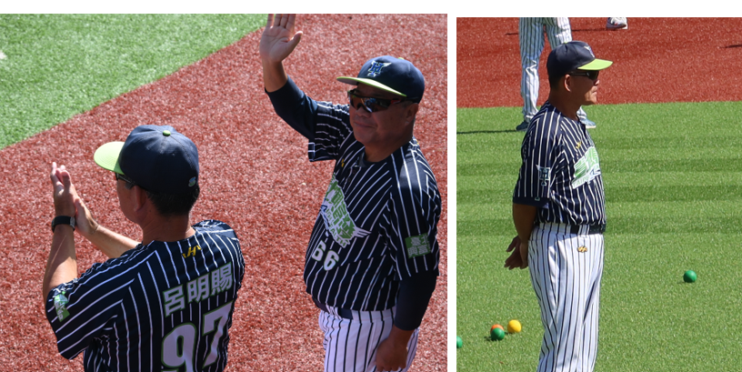 |
身旁還有戰術大師吳復連教練，他正是近年在職棒圈備受矚目的球星吳念庭的父親，父子皆名將的傳承讓人倍感親切；再加上李安熙教練與黃欽智教練的現身，這陣容簡直是國家隊規格的夢幻師資。這些昔日在國際賽場上叱吒風雲的英雄，此刻化身為溫柔有禮的大哥哥與長輩，耐心地為國小學童調整球帽、拍肩鼓勵，那份專業卻毫無縟節的親和力，瞬間拉近了棒球運動與孩子間的距離。這不僅僅是一場單純的體驗，更是一場高規格的運動美學啟蒙。
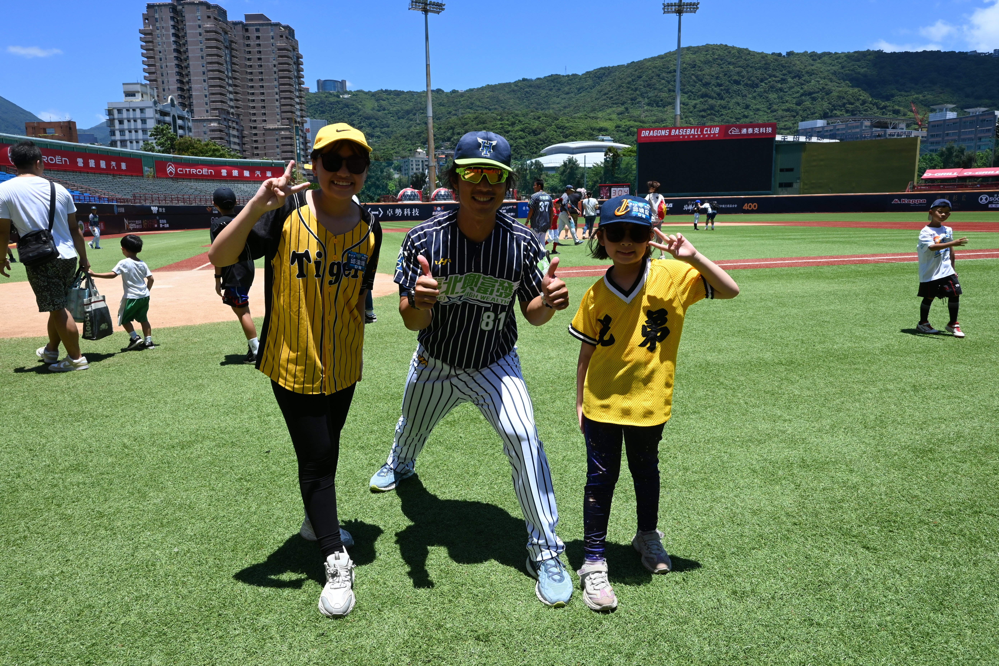 |
為了兼顧國小學童的安全與運動樂趣，主辦單位貼心地採用了樂樂棒球器材。透過輕巧安全、色彩鮮豔的泡棉球棒與特製軟球，將棒球最核心的投、打、守三大元素，拆解為兼具趣味性與挑戰性的關卡，讓孩子們在毫無壓力與危險的環境下，深刻體會國球的魅力。
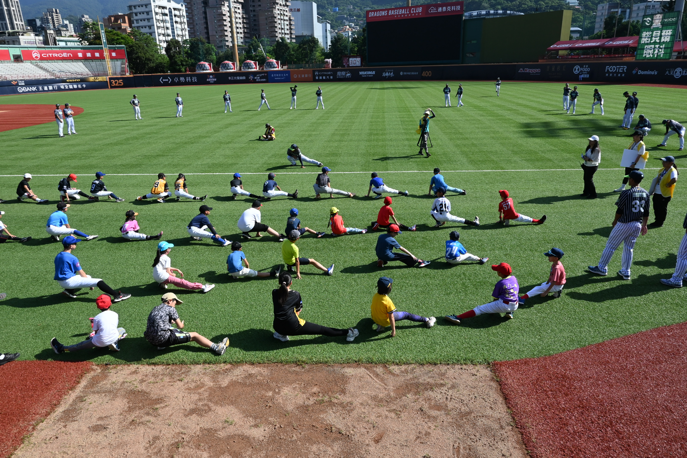 |
在投球與守備體驗區，黃欽智教練與李安熙教練細緻地從最基礎的細節教起。教練蹲下身子，叮嚀著手指要順著球面扣好，手肘抬高，順著身體的旋轉將力量貫注出去。
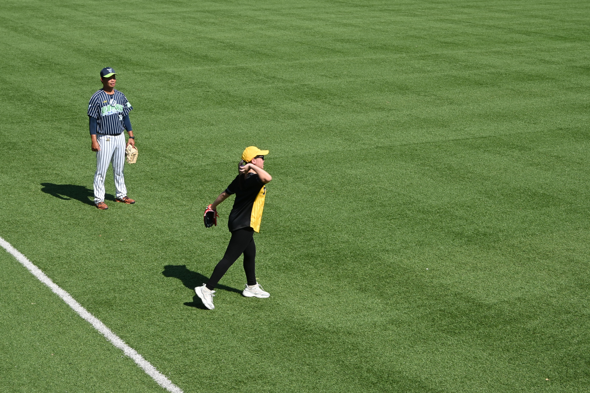 |
姐姐在教練地悉心指導下，深吸一口氣，模仿著職棒投手的抬腿姿態，奮力將手中的特製軟球投向九宮格看板。當安全軟球精準擊中目標、發出沉穩的撞擊聲時，姊姊興奮地跳躍了起來。在此處，孩子學習到的不僅是肢體的協調，更是面對目標時沉穩的專注力。而面對教練輕輕滾動而來的樂樂棒球，孩子們有模有樣地壓低身體、張開雙手，全神貫注地凝視著彈跳的球面。
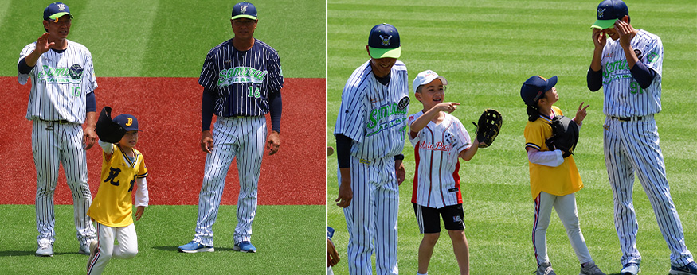 |
由於軟球滾動速度適中且安全無虞，孩子們絲毫沒有懼怕被球擊中的恐懼感。即便偶爾失手讓球從胯下漏了過去，也能笑著轉身追逐，在乾淨的紅土上留下一串串細小的腳印。在紅土上跌倒、拍拍灰塵隨即站起，這無疑是運動賜予孩子最棒的挫折教育。
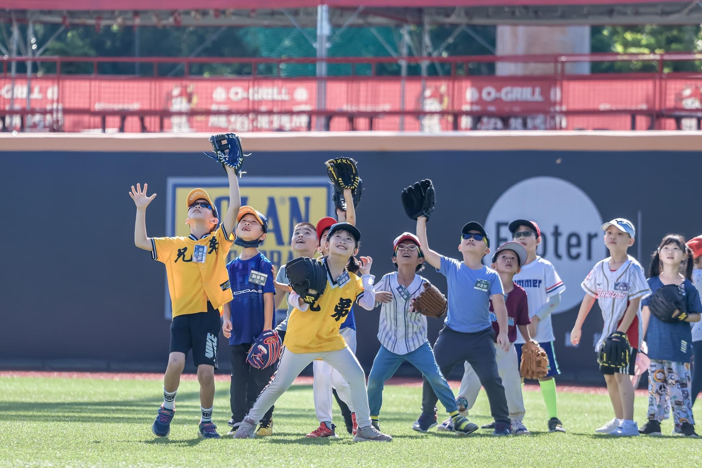 |
隨後轉戰打擊區，這正是姊妹們引頸期盼的環節。最讓人驚喜的是，竟然是由呂明賜總教練與吳復連教練親自上場指導孩子們打擊。對於國小階段的孩子而言，要操控球棒並準確擊中球體並非易事，而樂樂棒球專用的置球架，正是最好的輔助工具。
「亞洲巨砲」呂總教練展現了他無比的親和力，絲毫沒有球星架子，甚至不厭其煩地彎下腰，用那雙曾轟出無數全壘打的大手，溫柔地覆在小孩們的小手上，一節一節調整著站姿與揮棒軌跡，不斷鼓勵他要勇敢盯著球看。當輕巧的泡棉球棒與置球架上的軟球交會，發出清脆的啪一聲，軟球應聲飛向內野草皮。
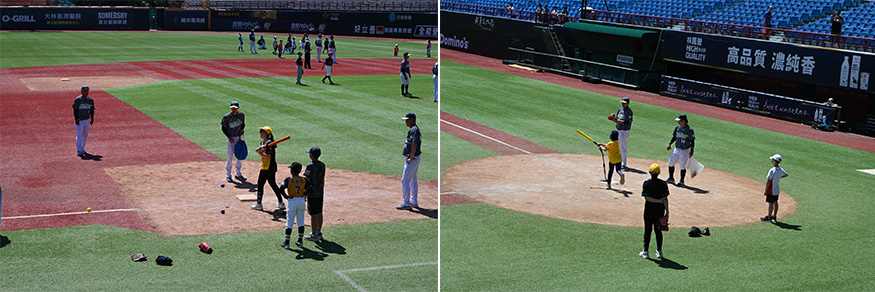 |
姊妹們揮棒後臉上不自覺綻放的自信笑容，成了那天最動人的畫面。看著昔日的國家隊重砲手與自己的孩子同框，那一刻，球飛得遠近並不重要，重要的是傳奇教練的提攜，在孩子心中種下了勇敢揮棒、追求成就感的種子。
這場體驗營最具價值之處，在於它絕非家長託管、孩子旁觀的流於形式，而是一場強調情感連結的親子類活動。台北市體育局貼心地規劃了諸多需要親子協同完成的互動環節。當我看著平時在家中沉迷於電子螢幕的孩子，此刻在烈日下揮汗如雨，卻展現出無比燦爛的笑容；當我佇立於一旁，為他們每一次的成功接球、每一次的奮力揮棒高聲喝采時，我驚覺自己已許久不曾如此全心全意地凝視孩子的成長。
平日繁忙的育兒生活總被寫不完的作業與各種瑣事填滿，但在這個被紅土與綠草包圍的午後，我們退回了最單純的玩伴關係，家長的陪伴化作孩子勇往直前的後盾。
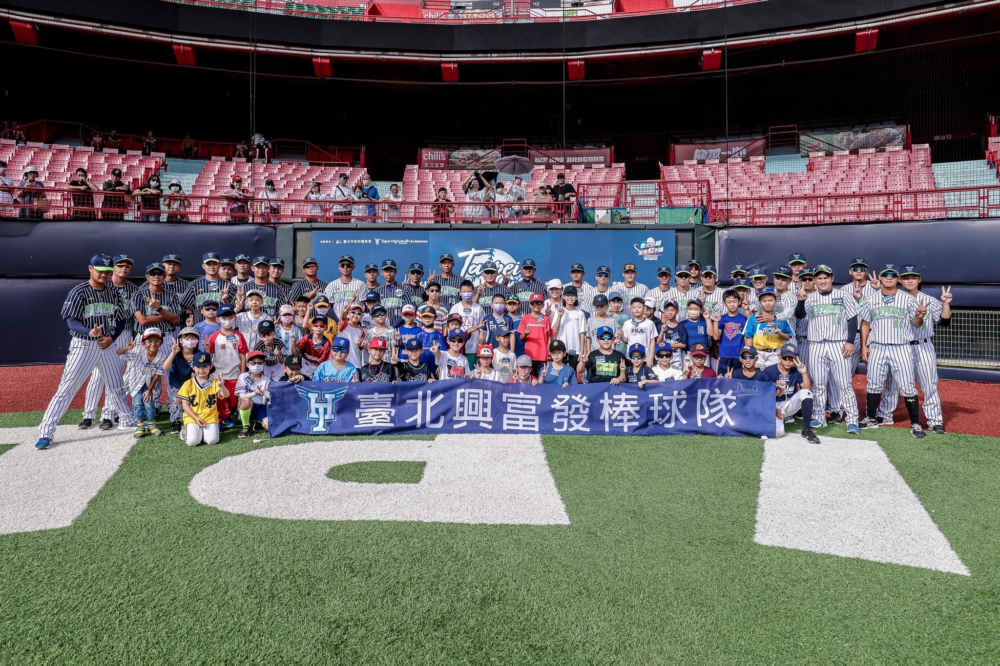 |
大汗淋漓的一上午，兩個孩子一左一右地一邊飲水，一邊雀躍地討論著方才從休息室到球場上的精采表現。在藍天白雲與綠草如茵的天母棒球場背景下，我們定格了無數幅珍貴的畫面。這些影像記錄的不僅是孩子們的棒球初體驗，更是我們家庭記憶中閃爍著金黃光芒的一頁。孩子們手上的微小汗珠與被太陽曬得通紅的臉頰，都是夏天最誠實也最美麗的勳章。
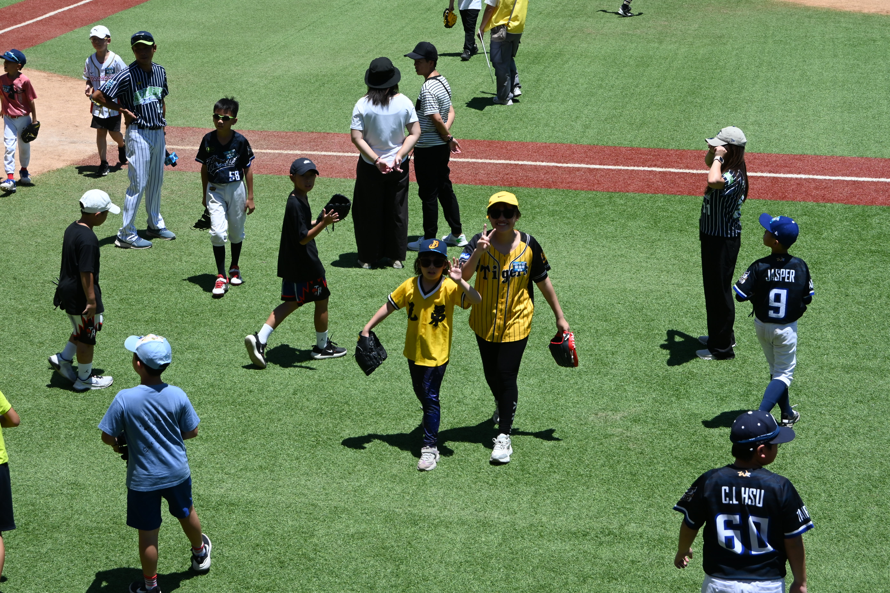 |
活動接近尾聲，體育局與興富發棒球隊特意為每位完成挑戰的小球員頒發了紀念證書。看著兩個孩子雙手捧著證書、眼神裡滿是驕傲的模樣，身為家長，心中的感動不言而喻。那張證書雖然輕薄，但在孩子心中卻重若千鈞，那是他們用汗水奔跑、用勇氣揮棒，並在名將教練團見證下所換來的榮譽。
我們常期許能培養孩子健全的體魄與運動習慣，卻往往缺乏一個恰當的契機。台北市體育局與興富發棒球隊透過如此高品質、兼具教育意義且完全免費的營隊，藉由樂樂棒球這個安全且低門檻的媒介，在無數學童的心中，播下了一株熱愛棒球、崇尚運動的種子。
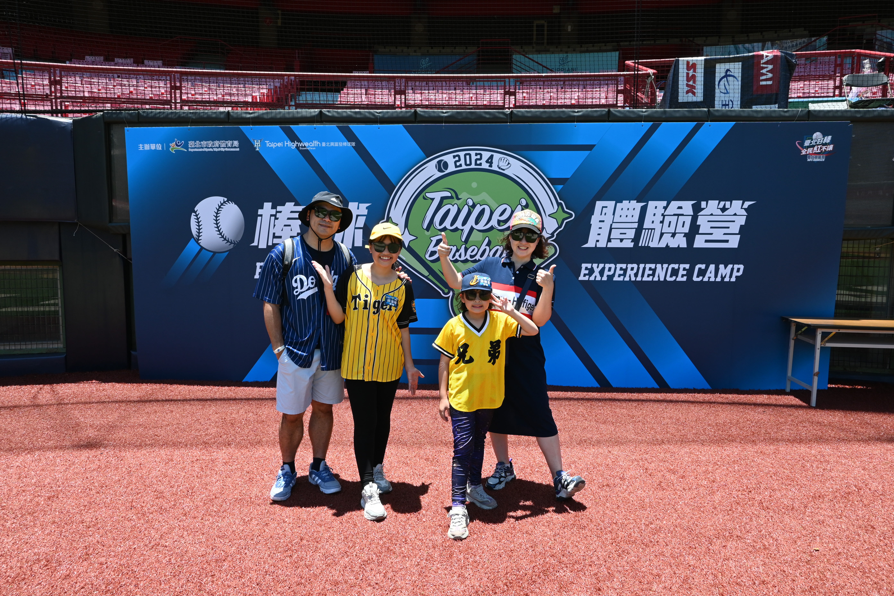 |
這次體驗營最讓我難忘的，不是小孩們精進了接球技巧，而是一次與傳奇的意外相遇。在球員通道的走廊上，姊姊正為練習時屢屢漏球而感到沮喪，一抬頭，竟然看見了身穿教練服的呂明賜教練迎面走來。呂教練似乎看出了姐姐的失落，停下腳步，用極具磁性的聲音問道：「小妹妹，今天練得怎麼樣？」我看著姊姊很害羞地說自己打得不好。他哈哈大笑，摸了摸姊姊的頭說：「失敗是全壘打的養分，職棒選手也是這樣練出來的！」說完，他主動拿過姐姐手上的球棒以及棒球，俐落地簽上了他的名字。看著球棒上那力透紙背的字跡，姊姊的沮喪瞬間一掃而空。這次偶然的簽名奇遇，成了我們一家在棒球營中最棒的收穫，也讓我們明白，真正的球星，不僅球技過人，更有著溫暖包容的大將之風。
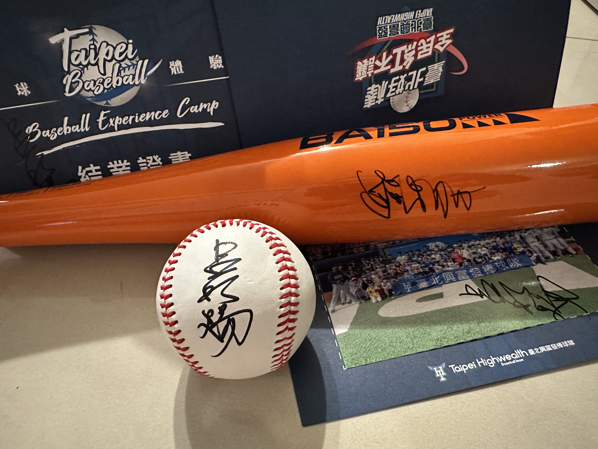 |